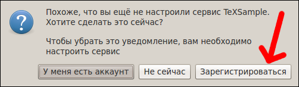
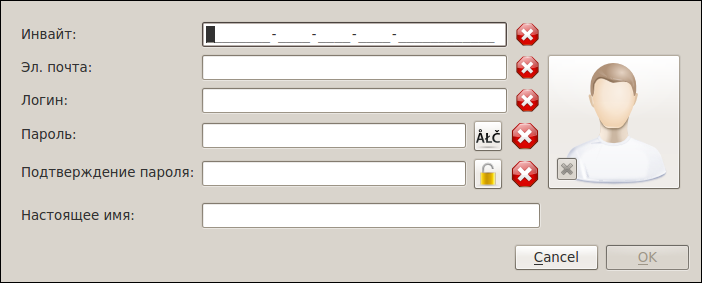
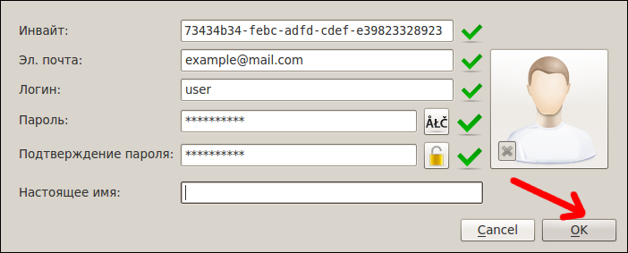
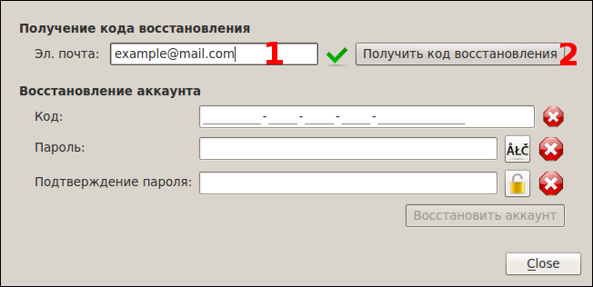
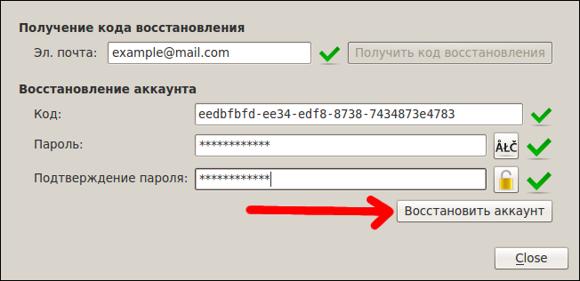

[Назад: 1. Начало работы]
[Далее: 1.2 Настройки]
Регистрация и восстановление аккаунта
Регистрация
Чтобы пользоваться системой CloudLab, вам необходимо обязательно зарегистрироваться, то есть привязать пару
логин-пароль (учетную запись) к своей электронной почте. При первом запуске приложения будет показано следующее
сообщение:

Для регистрации нажмите кнопку "Зарегистрироваться" (показана красной стрелкой). Появится форма регистрации,
изображенная ниже. Если при первом запуске вы отменили регистрацию, то повторно открыть эту форму можно, выбрав в меню
"CloudLab" пункт "Инструменты", а в нём - пункт "Зарегистрироваться...".

Инвайт. В это поле необходимо ввести специальный код, который обычно выдается администратором или
модератором (преподавателем). Этот код используется для того, чтобы избежать безконтрольной регистрации посторонних
лиц.
Эл. почта. В этом поле следует указать свою электронную почту. Обязательно введите действительный адрес,
так как он используется для восстановления учетной записи в случае, если вы забыли логин или пароль.
Логин. Это ваш основной идентификатор. Допускается использование любых символов
юникода.
Пароль. Хранится в зашифрованном виде и используется для идентификации пользователя совместно с логином.
Подтверждение пароля. Необходимо еще раз ввести тот же пароль, что и в поле выше, чтобы исключить
возможность опечатки. Регистрация не завершится, пока пароли не будут совпадать.
Настоящее имя. Вы можете указать свое настоящее имя в этом поле. Дргие пользователи смогут увидеть его.
Вы можете также выбрать аватар для своей учетной записи,
который будет видим другим пользователям. Чтобы выбрать картинку, которую вы хотите использовать в качестве аватара,
нажмите на большую кнопку справа. Если вы передумаете, можно сбросить аватар, нажав маленькую кнопку с изображением
крестика. Размер картинки не должен превышать 1 Мегабайт (1024 Килобайта), а ее разрешение не должно быть больше
2048x2048 пикселей.
Ниже приведен пример правильно заполненной формы регистрации:

Для завершения регистрации нажмите кнопку "OK" (показана красной стрелкой). Если регистрация пройдет успешно,
вы будете автоматически подключены к серверу CloudLab.
Восстановление аккаунта
Если вы забыли свой пароль или логин, вы можете попробовать восстановить свою учетную запись при помощи соответствующей
формы. В меню "CloudLab" выберите пункт "Инструменты", а в нём - пункт "Восстановить
аккаунт...". Появится следующая форма:

В поле, отмеченное красной цифрой "1", введите адрес своей электронной почты, а затем нажмите на кнопку
"Получить код восстановления" (отмечена красной цифрой "2"). Дождитесь, пока на вашу электронную
почту придет письмо с кодом восстановления, затем скопируйте его и введите в поле ниже, как показано на следующем
рисунке:

Введите также новый пароль, подтвердите его, а затем нажмите кнопку "Восстановить аккаунт" (показана красной
стрелкой).
[Назад: 1. Начало работы]
[Далее: 1.2 Настройки]